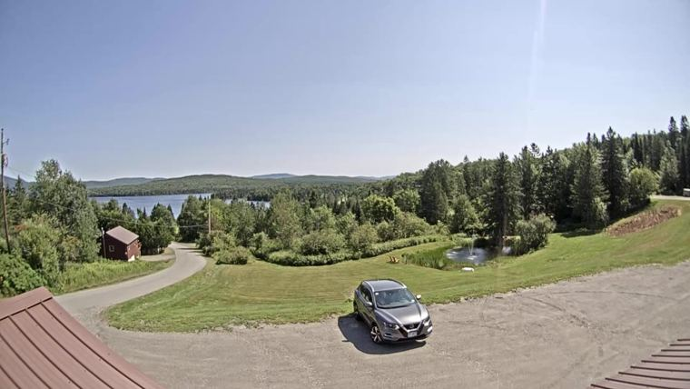

Cloud cover. Core window 10–11:30 PM decides go/no-go; 1–4 AM is Perseids and the scope. Each point is one forecast run.
Lower is better. Dot & line = NWS · pale bar = model spread. Bars getting shorter = consensus forming.
Only one snapshot so far — run this again tomorrow and the movement column appears.
First Connecticut Lake, ~15 km from the site. Hourly frame, cloud estimated, compared against what each model said for that hour.
Live — needs a connection. Frames below are archived.

0%Above = forecast range · below = observed · within 15 / 30 / beyond. Daylight only.
Darker = more cloud. Rows are sources.
EDT, 9 PM–4 AM. Amber box = core window. Dashed = no data.
Dots = models · bar = range · ◇ = NWS · shaded = under 30%
Nights before the trip, which verify while you watch — so this measures how far a forecast actually travels in this pattern.
Needs at least two runs. Once a few accumulate, this shows how far a night's forecast typically travels between day 5 and day 1 — your own empirical answer to how much the day-4 number is worth.
| Forecast run | Night 1 | Night 2 | Night 3 |
|---|---|---|---|
| 04 Aug 14:50 | 51%new | — | — |
Core-window mean cloud cover. Green ≤30% · amber ≤55% · red above. The arrow is the change since that night's previous reading — ↓ green is improving (less cloud), ↑ red is deteriorating. Full hourly detail in FORECAST_LOG.md.
Percent of sky covered by cloud — not a probability. PoP is a different quantity and doesn't matter here.
| Sky cover | NWS wording | For you |
|---|---|---|
| 0–12% | Clear | Everything works |
| 13–37% | Mostly clear | Shootable — might lose a few frames |
| 38–62% | Partly cloudy | Broken. You'd get gaps — OH_SHIT territory |
| 63–87% | Mostly cloudy | Occasional sucker holes |
| 88–100% | Overcast | Nothing |
Threshold 30% = top of "mostly clear." Caveat: it's a whole-dome average and can't say where the cloud is.